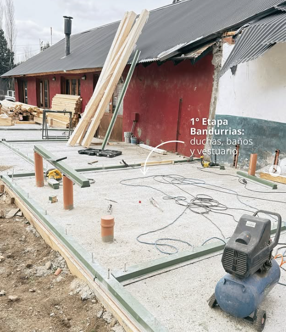

mantenimiento
La empresa de construcción y mantenimiento se destaca por ofrecer un servicio integral para el cuidado de las viviendas. Su equipo especializado atiende áreas clave como electricidad, gas, aire acondicionado, pintura y reparaciones generales, garantizando soluciones rápidas y seguras. Lo que más resalta es su compromiso con la calidad y la confianza, ya que brindan atención personalizada y adaptada a cada necesidad del cliente. Gracias a su experiencia, los hogares se mantienen en óptimas condiciones, asegurando confort, seguridad y estética en cada proyecto.
